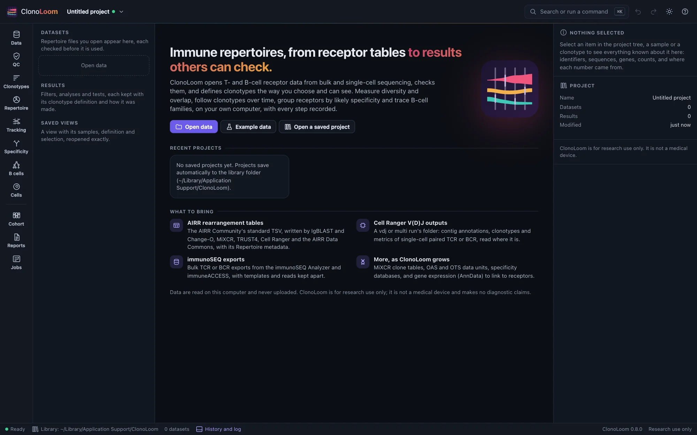
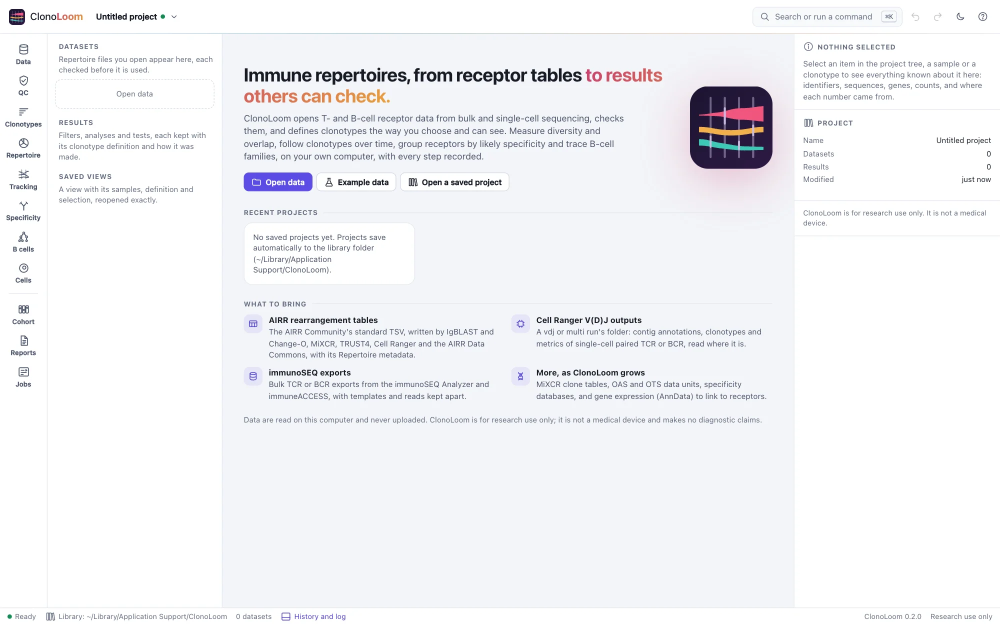
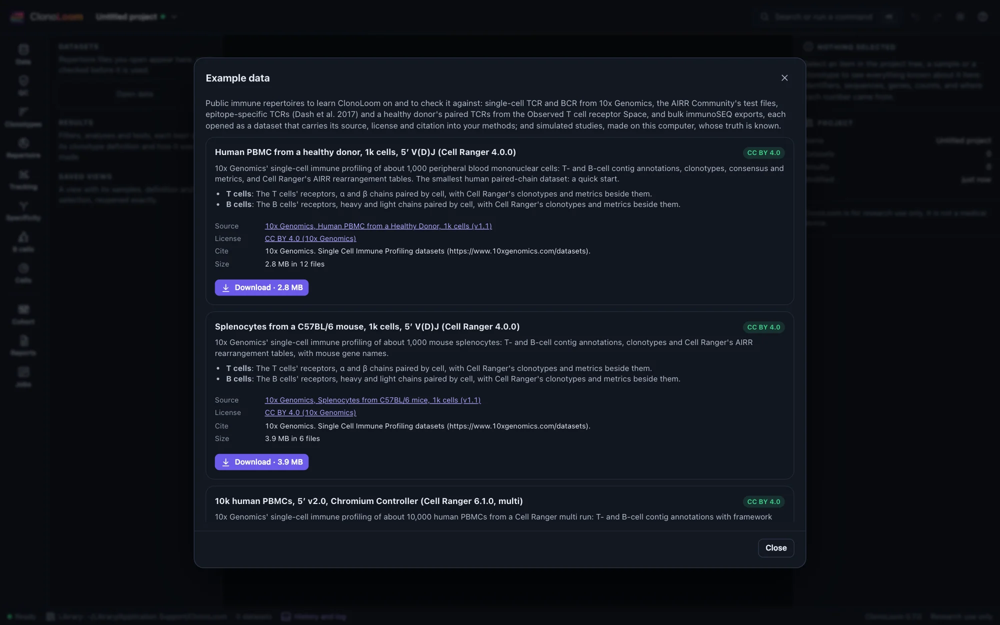
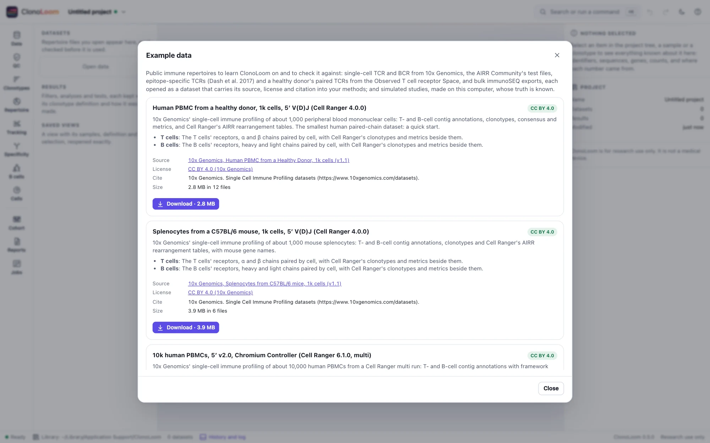

Getting started
Install ClonoLoom, start it, and try it on an example: public single-cell runs from 10x Genomics, the AIRR Community's test files, an immunoSEQ cohort, or simulated studies whose every clonotype is known.
Install and start it
Install ClonoLoom with the one-line installer (Install), then run:
$ clonoloomClonoLoom opens in its own window: Chrome, Edge, Brave or Chromium in app mode if you have one, else your default browser (--window browser asks for it). It runs on your computer only: nothing is uploaded, and it reaches no other computer unless you ask it to download example data (--offline stops even that). Closing the window stops ClonoLoom (--keep-running keeps it serving).


You can also name files on the command line: clonoloom run1/outs opens a Cell Ranger output folder, and running it again while ClonoLoom is open hands the files to the open window.
Try an example


Example data lists public datasets, downloaded from their publishers only when you ask, and simulated studies made on your computer:
| Example | Download | License | Opens |
|---|---|---|---|
| Human PBMC from a healthy donor, 1k cells, 5′ V(D)J (Cell Ranger 4.0.0) | 2.8 MB | CC BY 4.0 (10x Genomics) | T cells, B cells |
| Splenocytes from a C57BL/6 mouse, 1k cells (Cell Ranger 4.0.0) | 3.9 MB | CC BY 4.0 (10x Genomics) | T cells, B cells |
| 10k human PBMCs, 5′ v2.0 (Cell Ranger 6.1.0, multi) | 31 MB | CC BY 4.0 (10x Genomics) | T cells, B cells |
| 5k mouse splenocytes, GEM-X 5′ v3 (Cell Ranger 9.0.0, multi) | 27 MB | CC BY 4.0 (10x Genomics) | T cells, B cells |
| The AIRR Community's test and example files (v2.0.0) | 71 KB | CC BY 4.0 (AIRR Community) | a valid and an invalid AIRR file |
| Emerson et al. 2017, three small samples (immunoSEQ export) | 46 MB | immuneACCESS Terms of Use: research only, no redistribution | three subjects |
| An artificial B-cell immunization study with known families | none: made here in seconds | none (simulated) | 2,160 paired cells across nine samples, with known ancestors, families and isotype labels |
| A simulated TRB study with known truth | none: made here in seconds | none (simulated) | twelve samples of six subjects |
| A simulated TRB study with no difference between its groups | none: made here in seconds | none (simulated) | twelve samples of six subjects |
| A simulated CAR-T study with known truth | none: made here in seconds | none (simulated) | three patients before and after infusion, with their infusion products |
| A simulated transplant study with known truth | none: made here in seconds | none (simulated) | three recipients before and after a transplant, with their donors |
| A simulated vaccination study with known specificities | none: made here in seconds | none (simulated) | five subjects before and after a vaccination (or a placebo), every receptor's epitope known, with a specificity database |
Every downloaded file is checked against the checksum recorded when ClonoLoom was released. Data under a provider's terms of use (the immuneACCESS data) need you to read and accept the terms first. Open T cells (or B cells) then opens an example as a dataset, which carries its license and citation from then on. The simulated studies are labeled simulated wherever they are shown; see Simulated studies.
To follow the guide, download Human PBMC from a healthy donor, 1k cells and open its T cells; for the Repertoire pages, open A simulated TRB study with known truth; for the Tracking pages, the simulated CAR-T or transplant study. Those two come with guided steps, shown in the Tracking view: each step says what to look at, and Do it does it, as a script would (Remote control).
For B cells, generate An artificial B-cell immunization study with known families. Its nine guided steps, in the Tracking view, run from annotated inputs to families, germlines, mutations, trees, observed isotypes and cited methods. The worked example gives expected counts and interpretation limits.
The window
The rail on the left holds the views, in the order an analysis goes: Data, QC, Clonotypes, Repertoire, Tracking, Specificity, B cells and Jobs, and the views later releases fill (each says what it will do). The project tree beside them lists the datasets and the results kept; the inspector on the right describes what is chosen; the status bar shows the library, the datasets and the clonotype definition in use. Search or run a command (⌘K or Ctrl+K) finds any command, and undo and redo cover every change. The theme button in the header chooses a light or dark theme (or the system's), and turns on color-vision-friendly colors.
Next
Opening data covers your own files and other tools' tables, and how ClonoLoom checks them.